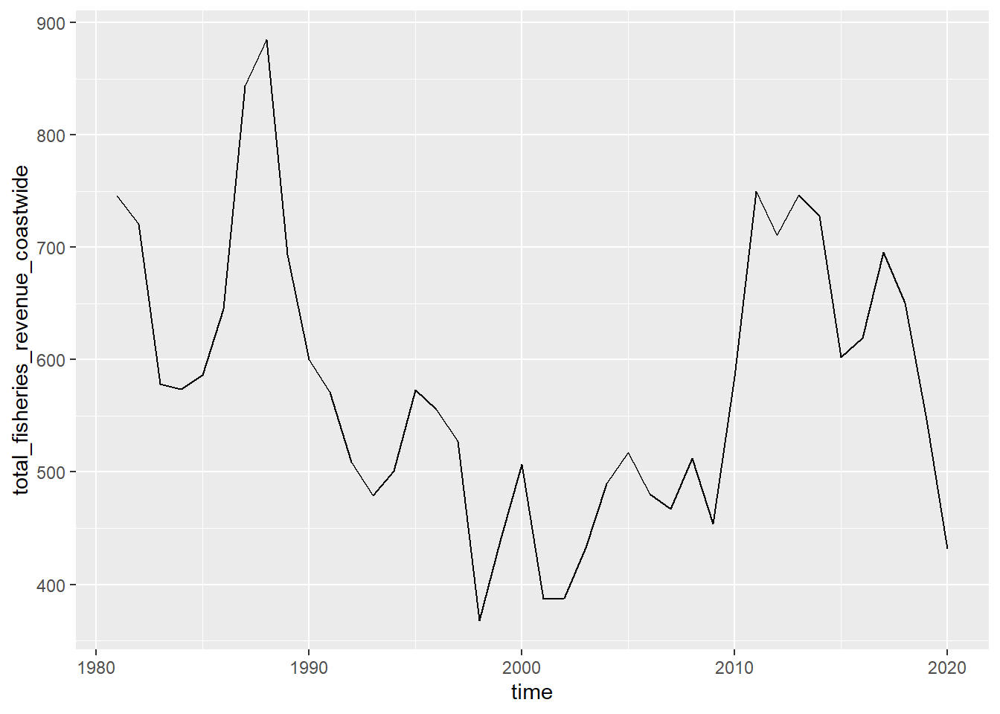
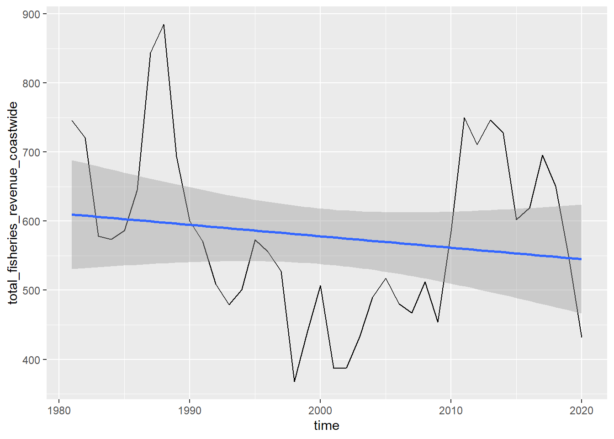
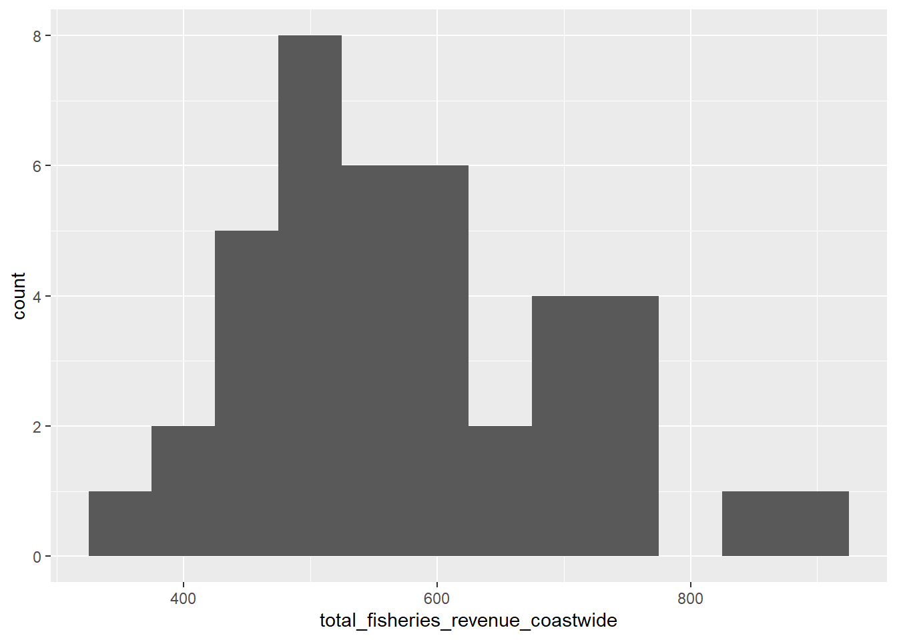
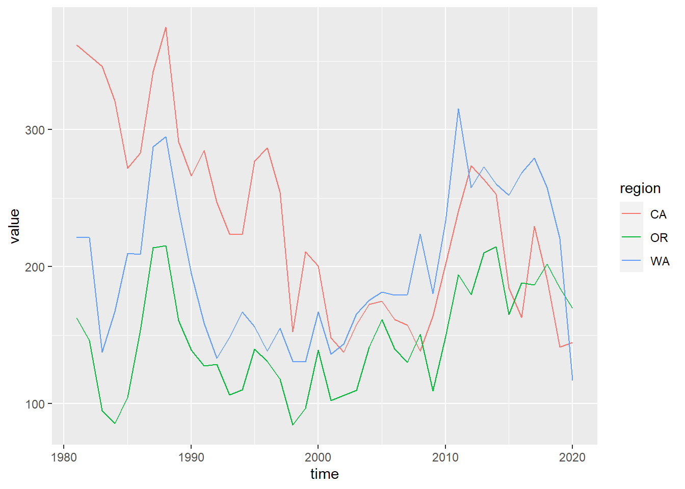
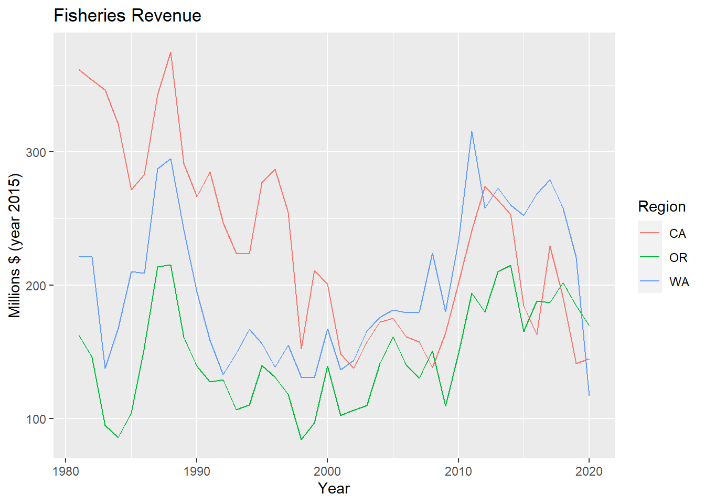
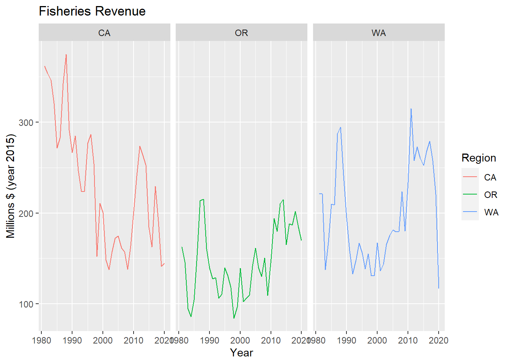
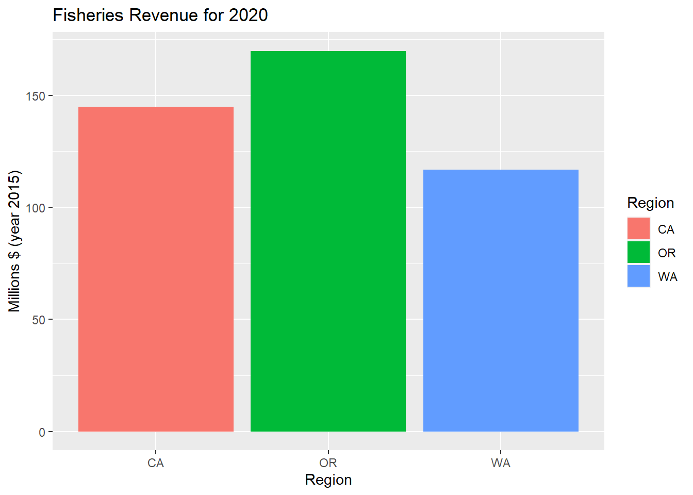
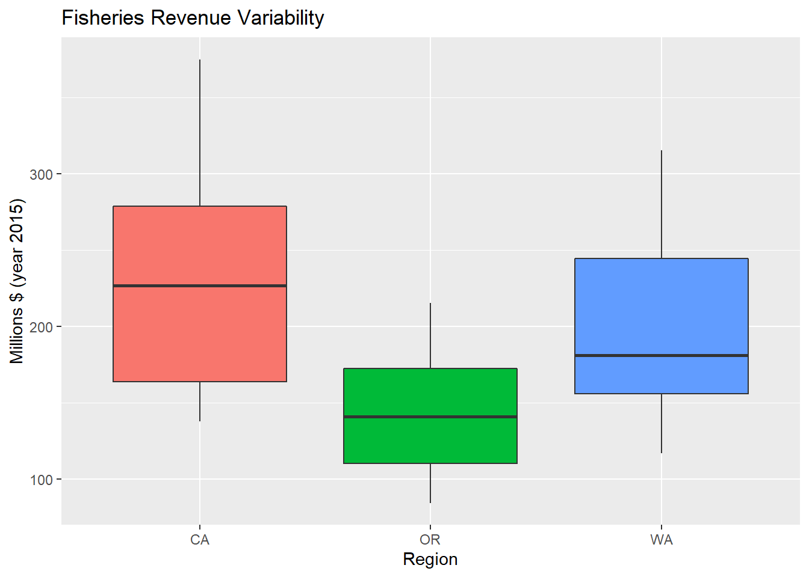
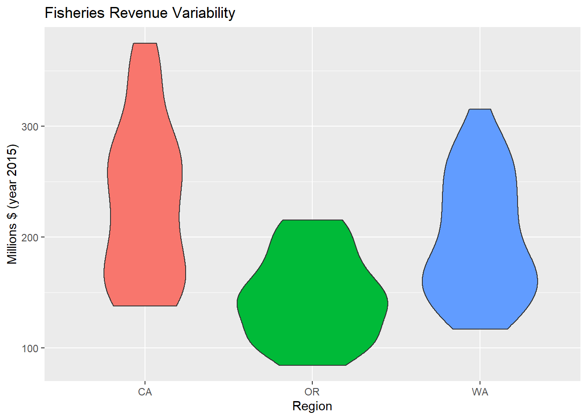
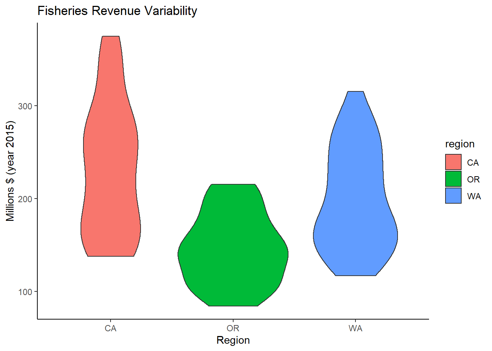

## simple line plot + geom_line ()
### feed the data as the first argument to ggplot()
### set up the aesthetics aes() as the second argument for specifiying the dimensions of the plot (x and y)
### add (+) the geometry, or plot type
### can check ggplot2 cheatsheets
library(dplyr)##
## Attaching package: 'dplyr'## The following objects are masked from 'package:stats':
##
## filter, lag## The following objects are masked from 'package:base':
##
## intersect, setdiff, setequal, unionlibrary(ggplot2)
# subset data
d_coast <- d_ac %>%
# select columns
select(time, total_fisheries_revenue_coastwide) %>%
# filter rows
filter(!is.na(total_fisheries_revenue_coastwide))
datatable(d_coast)# ggplot object
p_coast <- d_coast %>%
# setup aesthetics
ggplot(aes(x = time, y = total_fisheries_revenue_coastwide)) +
# add geometry
geom_line()
# show plot
p_coast
### add a smooth layer based on a linear model (method = "lm")
p_coast +
geom_smooth(method = "lm")## `geom_smooth()` using formula 'y ~ x'
d_coast %>%
# setup aesthetics
ggplot(aes(x = total_fisheries_revenue_coastwide)) +
# add geometry
geom_histogram(binwidth=50)
### showing other regional values except coastwide
### need to tidy data into a long format
library(stringr)
library(tidyr)
d_rgn <- d_ac %>%
# select columns
select(
time,
starts_with("total_fisheries_revenue")) %>%
# exclude column
select(-total_fisheries_revenue_coastwide) %>%
# pivot longer
pivot_longer(-time) %>%
# mutate region by stripping other
mutate(
region = name %>%
str_replace("total_fisheries_revenue_", "") %>%
str_to_upper()) %>%
# filter for not NA
filter(!is.na(value)) %>%
# select columns
select(time, region, value)
d_rgn## # A tibble: 120 x 3
## time region value
## <dttm> <chr> <dbl>
## 1 1981-01-01 00:00:00 CA 362.
## 2 1981-01-01 00:00:00 OR 163.
## 3 1981-01-01 00:00:00 WA 222.
## 4 1982-01-01 00:00:00 CA 354.
## 5 1982-01-01 00:00:00 OR 146.
## 6 1982-01-01 00:00:00 WA 221.
## 7 1983-01-01 00:00:00 CA 346.
## 8 1983-01-01 00:00:00 OR 94.8
## 9 1983-01-01 00:00:00 WA 138.
## 10 1984-01-01 00:00:00 CA 321.
## # ... with 110 more rows# create plot object
p_rgn <- ggplot(
d_rgn,
# aesthetics
aes(
x = time,
y = value,
group = region,
color = region)) +
# geometry
geom_line()
# show plot
p_rgn
p_rgn <- p_rgn +
labs(
title = "Fisheries Revenue",
x = "Year",
y = "Millions $ (year 2015)",
color = "Region")
p_rgn
### to look at similar data one variable at a time - facting
p_rgn +
facet_wrap(vars(region))
### geom_bar or geom_col differ in number of variables
library(glue)##
## Attaching package: 'glue'## The following object is masked from 'package:dplyr':
##
## collapselibrary(lubridate)##
## Attaching package: 'lubridate'## The following objects are masked from 'package:base':
##
## date, intersect, setdiff, unionyr_max <- year(max(d_rgn$time))
d_rgn %>%
# filter by most recent time
filter(year(time) == yr_max) %>%
# setup aesthetics
ggplot(aes(x = region, y = value, fill = region)) +
# add geometry
geom_col() +
# add labels
labs(
title = glue("Fisheries Revenue for {yr_max}"),
x = "Region",
y = "Millions $ (year 2015)",
fill = "Region")
d_rgn %>%
# setup aesthetics
ggplot(aes(x = region, y = value, fill = region)) +
# add geometry
geom_boxplot() +
# add labels
labs(
title = "Fisheries Revenue Variability",
x = "Region",
y = "Millions $ (year 2015)") +
# drop legend since redundant with x axis
theme(
legend.position = "none")
p_rgn_violin <- d_rgn %>%
# setup aesthetics
ggplot(aes(x = region, y = value, fill = region)) +
# add geometry
geom_violin() +
# add labels
labs(
title = "Fisheries Revenue Variability",
x = "Region",
y = "Millions $ (year 2015)") +
# drop legend since redundant with x axis
theme(
legend.position = "none")
p_rgn_violin
p_rgn_violin +
theme_classic()
### make ggplot interactive with plotly::ggplotly()
plotly::ggplotly(p_rgn)### html widget plotting library more specifically for time series data - dygraphs
### data series in wide, not tidy long format (ass ggplot) - so use tidyr pivot_wider()
library(dygraphs)
d_rgn_wide <- d_rgn %>%
mutate(
Year = year(time)) %>%
select(Year, region, value) %>%
pivot_wider(
names_from = region,
values_from = value)
datatable(d_rgn_wide)d_rgn_wide %>%
dygraph() %>%
dyRangeSelector()